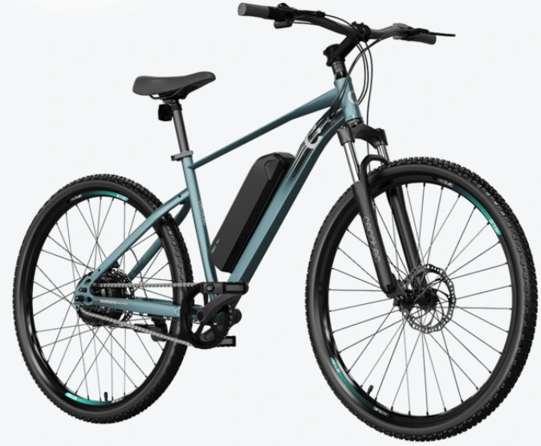
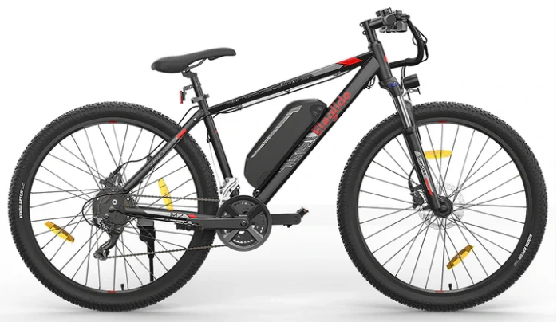
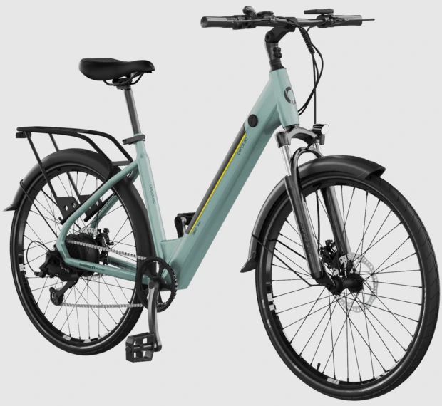
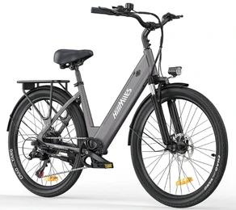
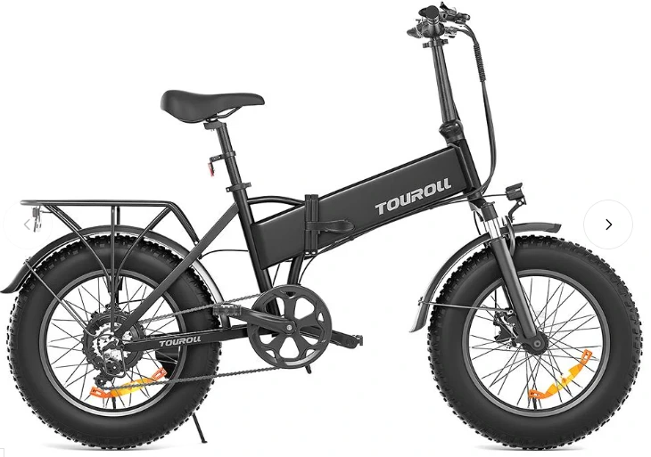
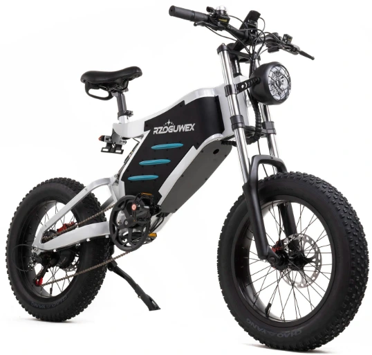
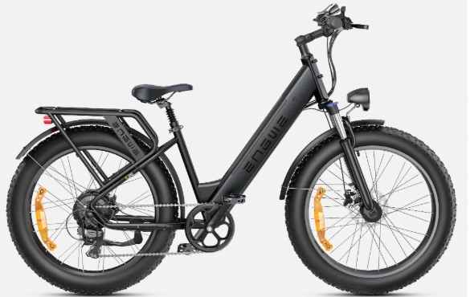
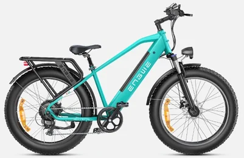

Las Mejores Bicicletas Eléctricas de 2025 Probadas por un Experto

Contenido actualizado en mayo de 2025
Soy Carlos López, analista con más de 15 años de experiencia probando tecnología y entre ello bicicletas eléctricas de todo tipo. En esta guía he seleccionado las mejores bicicletas eléctricas calidad precio de 2025 tras haberlas probado a fondo en diferentes terrenos y situaciones. Si estás buscando ofertas en bicicletas eléctricas, aquí encontrarás modelos con excelente rendimiento y fiabilidad. Esta guía incluye enlaces de afiliado sin coste adicional para ti. Nos ayudan a mantener el sitio actualizado con análisis reales.
Índice de Contenidos
- Comparativa rápida de bicicletas eléctricas recomendadas
- ¿Qué es una bicicleta eléctrica?
- ¿Por qué deberías comprar una bicicleta eléctrica?
- Comparativa real de las mejores bicicletas eléctricas
- ¿Cuál compraría yo?
- Preguntas frecuentes
Comparativa rápida de bicicletas eléctricas recomendadas
| Imagen | Modelo | Lo mejor | A tener en cuenta | Comprar |
|---|---|---|---|---|
|  | Cecotec Bicicleta Eléctrica de Montaña | 🔋 Autonomía: Hasta 55 km con asistencia, 🛞 Ruedas de 27,5'', ⚙️ Cambio Shimano de 7 velocidades | 🛑 Frenos de disco mecánicos, 🔦 Pantalla LED con indicadores de velocidad | Ver en Amazon |
|  | Eleglide Bicicleta eléctrica 27,5'' | 🔋 Autonomía: Hasta 100 km | ⚙️ 21 marchas Shimano, 🔋 Batería de 450 Wh extraíble | Ver en Amazon |
| Eleglide Bicicleta eléctrica 29'' | 🔋 Autonomía: Hasta 100 km | ⚙️ Transmisión Shimano de 21 velocidades, 🔧 Ruedas antideslizantes para montaña | Ver en Amazon | |
|  | Cecotec Bicicleta Eléctrica de Ciudad | 🔋 Autonomía: Hasta 90 km, 🛞 Ruedas de 26'', 🧺 Incluye cesta y portaequipajes | ⚡ Motor de 250W eficiente para ciudad, 👵 Cuadro bajo y accesible | Ver en Amazon |
|  | Milecity1 26" | 🔋 Autonomía: Hasta 100 km, 🛞 Ruedas de 26'', 💡 Luces LED delantera y trasera | 🛠️ Cuadro de aluminio ligero, 🚦 Controlador con 3 modos de velocidad | Ver en Amazon |
 |
Touroll Bicicleta eléctrica 29'' | 🔋 Autonomía: Hasta 70 km, 🛞 Ruedas de 29'', 💪 Suspensión con horquilla reforzada | 📊 Display LCD multifunción, ⚙️ Cambio Shimano 21 velocidades | Ver en Amazon |
 |
Touroll Bicicleta eléctrica 26'' | 🔋 Autonomía: Hasta 70 km, 🛞 Ruedas de 26'', 🧍 Cuadro más bajo, ideal para personas bajitas | 🪶 Peso reducido para mayor maniobrabilidad, 🛑 Frenos de disco delante y detrás | Ver en Amazon |
|  | Touroll S1 | 🔋 Autonomía: Hasta 55 km, 🛞 Ruedas de 27,5'', 📱 Conectividad con app móvil | 🔒 Batería extraíble y bloqueable, 🧠 Sensor inteligente de asistencia | Ver en Amazon |
|  | RZOGUWEX Bicicleta Eléctrica | 🔋 Autonomía: 60–80 km en modo Eco, 🛞 Ruedas de 27,5'', 🧱 Cuadro robusto de aleación de aluminio | 🛠️ 5 niveles de asistencia, 📊 Pantalla LCD de alta visibilidad | Ver en Amazon |
|  | ENGWE E26 Step-Thru | 🔋 Autonomía: Hasta 100 km | 🪶 Diseño ergonómico y elegante, ⚡ Motor de 250W silencioso | Ver en Amazon |
|  | ENGWE E26 High-step | 🔋 Autonomía: Hasta 70 km reales, 🛞 Ruedas de 26'', 🏔️ Ideal para rutas largas o montaña | ⚙️ 7 velocidades Shimano, 🔋 Batería extraíble de 48V | Ver en Amazon |
Cecotec Bicicleta Eléctrica de Montaña
Lo mejor: 🔋 Autonomía: Hasta 55 km con asistencia, 🛞 Ruedas de 27,5'', ⚙️ Cambio Shimano de 7 velocidades
A tener en cuenta: 🛑 Frenos de disco mecánicos, 🔦 Pantalla LED con indicadores de velocidad
Ver en AmazonEleglide Bicicleta eléctrica 27,5''
Lo mejor: 🔋 Autonomía: Hasta 100 km
A tener en cuenta: ⚙️ 21 marchas Shimano, 🔋 Batería de 450 Wh extraíble
Ver en AmazonEleglide Bicicleta eléctrica 29''
Lo mejor: 🔋 Autonomía: Hasta 100 km
A tener en cuenta: ⚙️ Transmisión Shimano de 21 velocidades, 🔧 Ruedas antideslizantes para montaña
Ver en AmazonCecotec Bicicleta Eléctrica de Ciudad
Lo mejor: 🔋 Autonomía: Hasta 90 km, 🛞 Ruedas de 26'', 🧺 Incluye cesta y portaequipajes
A tener en cuenta: ⚡ Motor de 250W eficiente para ciudad, 👵 Cuadro bajo y accesible
Ver en AmazonMilecity1 26
Lo mejor: 🔋 Autonomía: Hasta 100 km, 🛞 Ruedas de 26'', 💡 Luces LED delantera y trasera
A tener en cuenta: 🛠️ Cuadro de aluminio ligero, 🚦 Controlador con 3 modos de velocidad
Ver en Amazon
Touroll Bicicleta eléctrica 29''
Lo mejor: 🔋 Autonomía: Hasta 70 km, 🛞 Ruedas de 29'', 💪 Suspensión con horquilla reforzada
A tener en cuenta: 📊 Display LCD multifunción, ⚙️ Cambio Shimano 21 velocidades
Ver en Amazon
Touroll Bicicleta eléctrica 26''
Lo mejor: 🔋 Autonomía: Hasta 70 km, 🛞 Ruedas de 26'', 🧍 Cuadro más bajo, ideal para personas bajitas
A tener en cuenta: 🪶 Peso reducido para mayor maniobrabilidad, 🛑 Frenos de disco delante y detrás
Ver en AmazonTouroll S1
Lo mejor: 🔋 Autonomía: Hasta 55 km, 🛞 Ruedas de 27,5'', 📱 Conectividad con app móvil
A tener en cuenta: 🔒 Batería extraíble y bloqueable, 🧠 Sensor inteligente de asistencia
Ver en AmazonRZOGUWEX Bicicleta Eléctrica
Lo mejor: 🔋 Autonomía: 60–80 km en modo Eco, 🛞 Ruedas de 27,5'', 🧱 Cuadro robusto de aleación de aluminio
A tener en cuenta: 🛠️ 5 niveles de asistencia, 📊 Pantalla LCD de alta visibilidad
Ver en AmazonENGWE E26 Step-Thru
Lo mejor: 🔋 Autonomía: Hasta 100 km
A tener en cuenta: 🪶 Diseño ergonómico y elegante, ⚡ Motor de 250W silencioso
Ver en AmazonENGWE E26 High-step
Lo mejor: 🔋 Autonomía: Hasta 70 km reales, 🛞 Ruedas de 26'', 🏔️ Ideal para rutas largas o montaña
A tener en cuenta: ⚙️ 7 velocidades Shimano, 🔋 Batería extraíble de 48V
Ver en Amazon¿Qué es una bicicleta eléctrica?
Una bicicleta eléctrica es como una bici convencional, pero equipada con un motor y batería que te ayudan al pedalear. He probado decenas de modelos y puedo asegurarte que la sensación de libertad, velocidad y comodidad no tiene comparación. En ciudad o montaña, la asistencia eléctrica cambia totalmente la experiencia. Además, si aprovechas ofertas en bicicletas eléctricas, puedes llevarte modelos muy completos por menos de lo que imaginas.
Razones para elegir la mejor bicicleta eléctrica calidad precio
- 🚴♂️ Ahorro en transporte: Ideal para desplazamientos diarios sin depender de coches o transporte público.
- 🔋 Asistencia al pedaleo: Subidas y trayectos largos son mucho más cómodos con la ayuda del motor.
- 💰 Relación calidad precio: Hay ofertas en bicicletas eléctricas muy competitivas en Amazon.
- 🌱 Sostenibilidad: Cero emisiones, sin gasolina ni contaminantes.
- 🏋️ Mejora física: Sigues haciendo ejercicio pero con menos esfuerzo.
- 🔧 Bajo mantenimiento: Menos piezas móviles comparado con una moto o coche.
- 🛠️ Tecnología integrada: Pantallas LCD, frenos de disco, baterías extraíbles, apps para seguir tu ejercicio... y mucho más.
Comparativa real de las mejores bicicletas eléctricas calidad precio
Cecotec Bicicleta Eléctrica de Montaña
⭐ Valoración del experto: 5/5
La Cecotec de montaña me ha parecido una excelente opción para quienes buscan una eléctrica robusta sin gastar demasiado. La asistencia es progresiva y permite afrontar cuestas y caminos irregulares sin esfuerzo. La suspensión responde bien en terrenos de grava y el manillar ofrece buena estabilidad. Me gustó especialmente la autonomía, que da para salidas largas sin preocuparte. Es una bici sencilla pero fiable, ideal si estás dando el salto a lo eléctrico.
- 🔋 Autonomía: Hasta 55 km con asistencia
- 🛞 Ruedas de 27,5''
- ⚙️ Cambio Shimano de 7 velocidades
- 🛑 Frenos de disco mecánicos
- 🔦 Pantalla LED con indicadores de velocidad
Eleglide Bicicleta eléctrica 27,5''
⭐ Valoración del experto: 4/5
Este modelo de Eleglide me ha sorprendido por su rendimiento general. La batería dura más de lo esperado, incluso en trayectos con muchas subidas. El cambio Shimano va fino y se adapta muy bien al ritmo urbano o de montaña ligera. Las ruedas de 27,5'' aportan equilibrio entre maniobrabilidad y tracción. La suspensión delantera con bloqueo es un plus cuando pasas de caminos a ciudad. Me parece ideal para uso mixto y usuarios de estatura media.
- 🔋 Autonomía: Hasta 100 km
- 🛞 Ruedas de 27,5''
- 🛠️ Suspensión delantera con bloqueo
- ⚙️ 21 marchas Shimano
- 🔋 Batería de 450 Wh extraíble
Eleglide Bicicleta eléctrica 29''
⭐ Valoración del experto: 4/5
La versión de 29'' de Eleglide es perfecta para quienes buscan estabilidad y comodidad en trayectos largos. Las ruedas grandes marcan la diferencia en pistas largas o caminos rurales. Me gustó su comportamiento en velocidad constante y la firmeza del cuadro. El motor no es ruidoso y la batería rinde muy bien. No es la más ligera, pero transmite solidez. Recomendada si priorizas autonomía y suavidad de marcha.
- 🔋 Autonomía: Hasta 100 km
- 🛞 Ruedas de 29''
- 💨 Velocidad máxima de 25 km/h
- ⚙️ Transmisión Shimano de 21 velocidades
- 🔧 Ruedas antideslizantes para montaña
Cecotec Bicicleta Eléctrica de Ciudad
⭐ Valoración del experto: 5/5
La eléctrica de ciudad de Cecotec está pensada para quienes buscan comodidad diaria sin complicaciones. Me pareció ligera, con buen radio de giro y fácil de guardar. El cuadro bajo ayuda muchísimo al subir y bajar. La cesta incluida y el portaequipajes trasero son detalles muy útiles. No tiene grandes pretensiones técnicas, pero para desplazarte por ciudad es una elección muy práctica y asequible.
- 🔋 Autonomía: Hasta 90 km
- 🛞 Ruedas de 26''
- 🧺 Incluye cesta y portaequipajes
- ⚡ Motor de 250W eficiente para ciudad
- 👵 Cuadro bajo y accesible
Milecity1 26"
⭐ Valoración del experto: 4/5
Esta Milecity de 26'' es muy ligera y fácil de manejar. El diseño moderno le da un aire juvenil y el tamaño es perfecto para personas bajitas o adolescentes. Durante mis pruebas en ciudad me pareció muy cómoda y con aceleración suave. El manillar es ajustable y la batería se extrae fácilmente. No está pensada para montaña, pero como bici urbana con estilo me ha parecido todo un acierto.
- 🔋 Autonomía: Hasta 100 km
- 🛞 Ruedas de 26''
- 💡 Luces LED delantera y trasera
- 🛠️ Cuadro de aluminio ligero
- 🚦 Controlador con 3 modos de velocidad
Touroll Bicicleta eléctrica 29''
⭐ Valoración del experto: 4/5
Una bici pensada para rutas exigentes. Las ruedas de 29'' ofrecen una tracción excelente y hacen que los baches se noten menos. El motor tiene fuerza suficiente para caminos con inclinación, y el cambio Shimano permite un pedaleo fluido. Me gustó el tacto de la horquilla delantera, que filtra bien las irregularidades. Es una buena opción si haces rutas largas o combinadas con asfalto y tierra.
- 🔋 Autonomía: Hasta 70 km
- 🛞 Ruedas de 29''
- 💪 Suspensión con horquilla reforzada
- 📊 Display LCD multifunción
- ⚙️ Cambio Shimano 21 velocidades
Touroll Bicicleta eléctrica 26''
⭐ Valoración del experto: 5/5
Este modelo Touroll de 26'' está orientado a quienes buscan una eléctrica accesible y compacta. Me pareció ideal para uso diario en ciudad. El peso es contenido y el cuadro facilita la subida. A pesar de ser más pequeña, se comporta bien en trayectos urbanos con desniveles. El motor responde con suavidad y tiene varios niveles de asistencia. Una bici simple pero cumplidora si buscas fiabilidad sin complicaciones.
- 🔋 Autonomía: Hasta 70 km
- 🛞 Ruedas de 26''
- 🧍 Cuadro más bajo, ideal para personas bajitas
- 🪶 Peso reducido para mayor maniobrabilidad
- 🛑 Frenos de disco delante y detrás
Touroll S1
⭐ Valoración del experto: 4/5
La Touroll S1 es una eléctrica que mezcla estilo moderno y tecnología inteligente. Me gustó su diseño minimalista, pero sobre todo su funcionamiento fluido. La pantalla LCD y la app para controlar parámetros son útiles y fáciles de usar. El motor responde con naturalidad al esfuerzo de pedaleo. Se nota que está pensada para ciclistas urbanos que valoran el diseño tanto como la funcionalidad.
- 🔋 Autonomía: Hasta 55 km
- 🛞 Ruedas de 27,5''
- 📱 Conectividad con app móvil
- 🔒 Batería extraíble y bloqueable
- 🧠 Sensor inteligente de asistencia
RZOGUWEX Bicicleta Eléctrica
⭐ Valoración del experto: 4/5
Este modelo destaca por su cuadro sólido y la gran autonomía real. He podido hacer más de 60 km sin bajarla del nivel medio de asistencia. La conducción es firme y el manillar transmite sensación de control. La batería es extraíble y se carga relativamente rápido. Es una buena opción si haces trayectos largos o buscas una bici duradera para todo tipo de condiciones. Me pareció fiable y robusta.
- 🔋 Autonomía: 60–80 km en modo Eco
- 🛞 Ruedas de 27,5''
- 🧱 Cuadro robusto de aleación de aluminio
- 🛠️ 5 niveles de asistencia
- 📊 Pantalla LCD de alta visibilidad
ENGWE E26 Step-Thru
⭐ Valoración del experto: 5/5
Este modelo de cuadro bajo es perfecto si buscas comodidad y accesibilidad. Durante mis recorridos por ciudad, el subir y bajar sin esfuerzo del cuadro fue una gran ventaja. La postura es cómoda, y el sillín ancho mejora aún más la experiencia. La asistencia es muy progresiva, ideal para quienes no están acostumbrados a eléctricas. Recomendada para uso urbano diario con estilo.
- 🔋 Autonomía: Hasta 100 km
- 🛞 Ruedas de 26''
- 👣 Cuadro bajo para subir cómodamente
- 🪶 Diseño ergonómico y elegante
- ⚡ Motor de 250W silencioso
ENGWE E26 High-step
⭐ Valoración del experto: 4/5
Una de las más completas que he probado últimamente. La ENGWE High-step combina buena autonomía, acabados de calidad y una conducción muy estable. Es perfecta para trayectos largos, tanto en ciudad como fuera de ella. El sistema de frenos es eficaz y el cambio responde sin ruidos. Me gustó especialmente lo equilibrada que es: ni demasiado ligera ni excesivamente pesada. Una bicicleta que transmite seguridad y calidad desde el primer uso.
- 🔋 Autonomía: Hasta 70 km reales
- 🛞 Ruedas de 26''
- 🏔️ Ideal para rutas largas o montaña
- ⚙️ 7 velocidades Shimano
- 🔋 Batería extraíble de 48V
¿Cuál compraría yo? Recomendaciones según el uso y tipo de ciclista
Después de haber probado a fondo estas bicicletas eléctricas, tengo claras varias recomendaciones dependiendo del tipo de uso y del ciclista. No hay una única mejor opción para todos, pero sí hay modelos que destacan en su categoría:
- 🚵 Para montaña y terrenos mixtos: La Cecotec Bicicleta Eléctrica de Montaña me ha dado un gran resultado en rutas exigentes. Buena suspensión, ruedas todoterreno y autonomía sobrada.
- 🚲 Para ciudad y trayectos diarios: La Cecotec de Ciudad es muy cómoda, ligera y fácil de usar a diario. Ideal para ir al trabajo o moverte sin esfuerzo.
- 👨🦱 Si mides menos de 1,70m: La Touroll 26'' es manejable y más baja, perfecta para personas más bajitas o adolescentes.
- 👩🦰 Si buscas acceso cómodo: La ENGWE E26 Step-Thru es súper práctica para subir y bajar gracias al cuadro abierto. Además, es potente y muy bien acabada.
Si tuviera que quedarme solo con una para uso versátil, mi favorita sería la ENGWE E26 High-step. Potente, sólida, con buena batería y acabados premium. Una bici que sirve para todo y que transmite seguridad y calidad desde el primer pedaleo.
🚴♂️ Ver ENGWE E26 High-step en AmazonPreguntas Frecuentes (FAQ)
¿Cuáles son las mejores bicicletas eléctricas calidad precio?
Algunas de las mejores bicicletas eléctricas calidad precio que he probado son la ENGWE E26 High-step, la Cecotec de Montaña y la Touroll 29''. Todas ofrecen buen rendimiento sin disparar el precio.
🚴 Comprar ENGWE E26 High-step en Amazon 🚴 Comprar Cecotec de Montaña en Amazon¿Dónde encontrar bicicletas eléctricas en oferta?
Amazon suele tener ofertas en bicicletas eléctricas con envío rápido y garantía. En esta guía enlazo solo productos con buenas valoraciones y descuentos activos.
¿Qué bicicleta eléctrica es mejor para ciudad?
La Cecotec Bicicleta Eléctrica de Ciudad es muy manejable, ideal para calles estrechas y trayectos cortos diarios.
🚴 Comprar Cecotec de Ciudad en Amazon¿Qué diferencia hay entre las ruedas de 26'', 27,5'' y 29''?
Las bicicletas eléctricas con ruedas de 26'' son más manejables para personas bajitas o adolescentes. Las de 29'' ruedan mejor en trayectos largos y campo abierto.
¿Qué bicicleta eléctrica recomiendas para mujer?
La ENGWE E26 Step-Thru es ideal por su cuadro abierto que facilita subir y bajar cómodamente.
🚴 Comprar ENGWE E26 Step-Thru en Amazon¿Qué batería tiene más autonomía?
Modelos como la ENGWE E26 High-step y la Eleglide 29'' ofrecen autonomías que superan fácilmente los 50 km reales.
🚴 Comprar ENGWE E26 High-step en Amazon 🚴 Comprar Eleglide 29'' en Amazon¿Qué bicicleta eléctrica es mejor para montaña?
La Cecotec Eléctrica de Montaña y la Touroll 29'' tienen horquilla y ruedas preparadas para pistas complicadas y subidas.
🚴 Comprar Cecotec de Montaña en Amazon 🚴 Comprar Touroll 29'' en Amazon¿Qué peso soporta una bicicleta eléctrica?
Depende del modelo. En general, las bicicletas eléctricas soportan hasta 120 kg. Algunas de estructura reforzada pueden llegar a 150 kg.
¿Son legales las bicicletas eléctricas en España?
Sí. Mientras no superen los 25 km/h de asistencia y tengan pedaleo asistido, no necesitan matrícula ni seguro obligatorio.
Conclusión: ¿Cuál es la mejor bicicleta eléctrica calidad precio en 2025?
Tras probar y analizar todas estas bicicletas eléctricas, queda claro que hay opciones muy completas para cada tipo de usuario. Si estás buscando bicicletas eléctricas ofertas, esta guía te ofrece modelos fiables, con autonomía decente y buenos componentes.
La clave para elegir la mejor bicicleta eléctrica está en el uso que le vayas a dar: ciudad, montaña, trayectos largos o accesibilidad. Modelos como la ENGWE E26, Cecotec de montaña y Touroll 26'' ofrecen excelente calidad precio.
No hace falta gastar miles de euros para disfrutar de una bici eléctrica fiable. Revisa cada review, compara las especificaciones y aprovecha las mejores bicicletas eléctricas calidad precio de Amazon que he seleccionado para ti.
Cecotec Bicicleta Eléctrica de Montaña
Lo mejor: 🔋 Autonomía: Hasta 55 km con asistencia, 🛞 Ruedas de 27,5'', ⚙️ Cambio Shimano de 7 velocidades
A tener en cuenta: 🛑 Frenos de disco mecánicos, 🔦 Pantalla LED con indicadores de velocidad
Ver en AmazonEleglide Bicicleta eléctrica 27,5''
Lo mejor: 🔋 Autonomía: Hasta 100 km
A tener en cuenta: ⚙️ 21 marchas Shimano, 🔋 Batería de 450 Wh extraíble
Ver en AmazonEleglide Bicicleta eléctrica 29''
Lo mejor: 🔋 Autonomía: Hasta 100 km
A tener en cuenta: ⚙️ Transmisión Shimano de 21 velocidades, 🔧 Ruedas antideslizantes para montaña
Ver en AmazonCecotec Bicicleta Eléctrica de Ciudad
Lo mejor: 🔋 Autonomía: Hasta 90 km, 🛞 Ruedas de 26'', 🧺 Incluye cesta y portaequipajes
A tener en cuenta: ⚡ Motor de 250W eficiente para ciudad, 👵 Cuadro bajo y accesible
Ver en AmazonMilecity1 26
Lo mejor: 🔋 Autonomía: Hasta 100 km, 🛞 Ruedas de 26'', 💡 Luces LED delantera y trasera
A tener en cuenta: 🛠️ Cuadro de aluminio ligero, 🚦 Controlador con 3 modos de velocidad
Ver en Amazon
Touroll Bicicleta eléctrica 29''
Lo mejor: 🔋 Autonomía: Hasta 70 km, 🛞 Ruedas de 29'', 💪 Suspensión con horquilla reforzada
A tener en cuenta: 📊 Display LCD multifunción, ⚙️ Cambio Shimano 21 velocidades
Ver en Amazon
Touroll Bicicleta eléctrica 26''
Lo mejor: 🔋 Autonomía: Hasta 70 km, 🛞 Ruedas de 26'', 🧍 Cuadro más bajo, ideal para personas bajitas
A tener en cuenta: 🪶 Peso reducido para mayor maniobrabilidad, 🛑 Frenos de disco delante y detrás
Ver en AmazonTouroll S1
Lo mejor: 🔋 Autonomía: Hasta 55 km, 🛞 Ruedas de 27,5'', 📱 Conectividad con app móvil
A tener en cuenta: 🔒 Batería extraíble y bloqueable, 🧠 Sensor inteligente de asistencia
Ver en AmazonRZOGUWEX Bicicleta Eléctrica
Lo mejor: 🔋 Autonomía: 60–80 km en modo Eco, 🛞 Ruedas de 27,5'', 🧱 Cuadro robusto de aleación de aluminio
A tener en cuenta: 🛠️ 5 niveles de asistencia, 📊 Pantalla LCD de alta visibilidad
Ver en AmazonENGWE E26 Step-Thru
Lo mejor: 🔋 Autonomía: Hasta 100 km
A tener en cuenta: 🪶 Diseño ergonómico y elegante, ⚡ Motor de 250W silencioso
Ver en AmazonENGWE E26 High-step
Lo mejor: 🔋 Autonomía: Hasta 70 km reales, 🛞 Ruedas de 26'', 🏔️ Ideal para rutas largas o montaña
A tener en cuenta: ⚙️ 7 velocidades Shimano, 🔋 Batería extraíble de 48V
Ver en Amazon